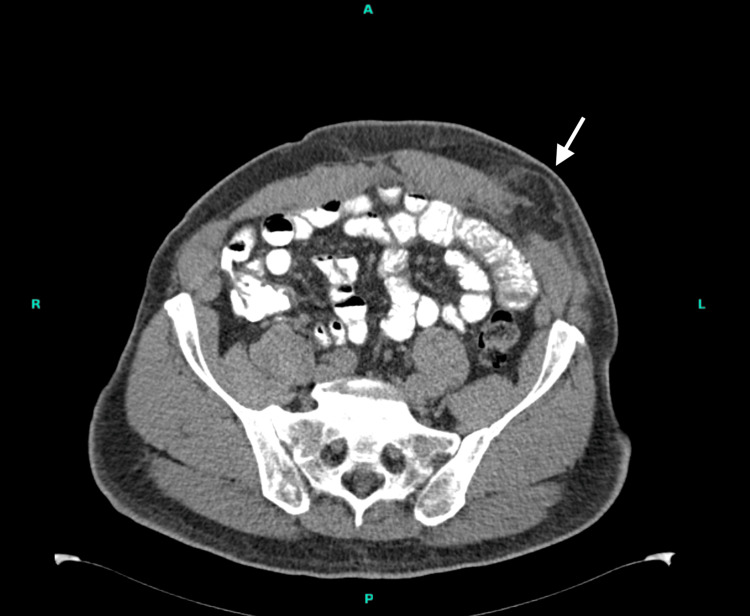
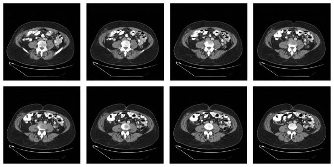
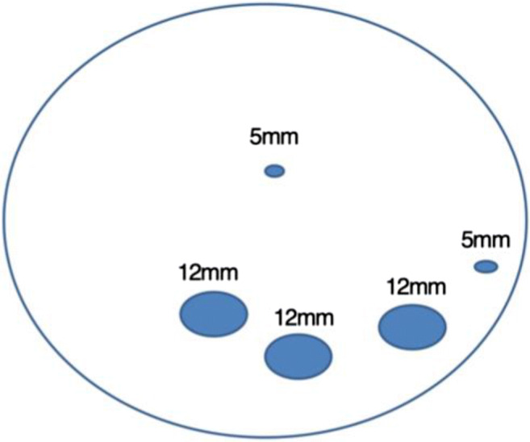

3111 — Thoát vị lỗ trocar sau nội soi: khối lồi mới ở lỗ trocar là thoát vị, tụ dịch hay di căn?
Tags: pattern:thoat-vi pattern:khuyet-can pattern:not pattern:ap-xe-sau-mo vung:thanh-bung vung:o-bung anatomy:thanh-bung protocol:CT-bung protocol:sieu-am-tai-cho protocol:Valsalva incidentaloma:not-thanh-bung
Mức chắc chắn (certainty): tổng hợp y văn (literature synthesis) — ghép phân tích gộp 22 nghiên cứu / 70.346 bệnh nhân về thoát vị lỗ trocar trong phẫu thuật phụ khoa nội soi (2026, PMC13125361), nghiên cứu thuần tập 365 bệnh nhân sau mổ béo phì có siêu âm chủ động (HERBALS, Obes Surg 2020, PMC7242489), thuần tập 2.377 ca cắt túi mật nội soi (2025, PMC12062153), tổng quan tự sự 2022 về phòng ngừa (PMC10831692) và 3 ca nguyên văn có ảnh (Cureus 2026 PMC13387625; Case Rep Surg 2016 PMC5018338; 2026 PMC13271838). Không có ca do nhóm tự chụp.
Câu hỏi thực hành: nam 69 tuổi, BMI 28,8 kg/m², mổ nội soi robot vá thoát vị vết mổ 2 tuần trước, ba cổng 8 mm ở bên trái không khâu cân. Bệnh nhân sờ thấy khối lồi mới ở lỗ trocar dưới bên trái, không sốt, còn đau nhẹ. Câu hỏi: khối này là tụ máu/seroma lành tính hay thoát vị lỗ trocar — và có phải mổ lại ngay không? Bài chốt ba quyết định: (1) mọi khối lồi ở đúng đường trocar cũ, xuất hiện trong 30 ngày đầu, phải được coi là thoát vị cho tới khi chứng minh ngược — kể cả khi cổng chỉ 8 mm và cân đã được khâu; (2) siêu âm động có nghiệm pháp Valsalva là bước đầu, CT 1–2 mm đa bình diện có Valsalva là bước chốt: đo khuyết cân (fascial defect) theo mm, xác định túi thoát vị chứa gì (mỡ, mạc nối, ruột non, ruột thừa) và tìm dấu nghẹt; (3) khuyết cân ≥ 10 mm hoặc có triệu chứng → mổ vá; có nghẹt/thắt/ruột thừa/túi thừa Meckel trong túi → mổ cấp cứu, không nắn thử rồi cho về. Nối 3061 – Di căn lỗ trocar, 1905 – Biến chứng & an toàn PIPAC, 1872 – Thoát vị Littre, 1936 – Tụ máu bao cơ thẳng bụng, 1967 – ACNES.
1. Tổng quan bệnh học – cơ chế hình ảnh: vì sao một lỗ 8 mm lại thành túi thoát vị
- Định nghĩa – vị trí chính xác: thoát vị lỗ trocar (port-site hernia, PSH; trocar-site hernia, TSH) là thoát vị vết mổ xuyên đúng đường trocar, từ phúc mạc → cân/cơ → mô dưới da. Vì là kênh xuyên toàn thành, túi thoát vị có thể nằm dưới da, giữa các lớp cơ (thoát vị trong cơ) hoặc sát phúc mạc; nội dung có thể là mỡ tiền phúc mạc, mạc nối, ruột non, đại tràng, ruột thừa, túi thừa Meckel.
- Tần suất — ba con số "không khớp nhau" và lý do: phân tích gộp 22 nghiên cứu / 70.346 bệnh nhân phẫu thuật phụ khoa nội soi cho tỷ lệ gộp 0,29% (KTC 95% báo cáo 0,00–0,02; I² = 99,3% — dị biệt rất lớn vì cách phát hiện khác nhau) (PMC13125361). Ở cắt túi mật nội soi, tỷ lệ phải mổ vá là 2,1% (36/1.756), trong đó lỗ rốn 3,2% so với lỗ thượng vị 0,7% (p < 0,001) (PMC12062153). Ngược lại, siêu âm chủ động ở 365 bệnh nhân sau mổ béo phì phát hiện 34% có khuyết thành bụng — phần lớn không triệu chứng (HERBALS, PMC7242489). Còn CT ở 244 bệnh nhân với 732 cổng 11–12 mm chỉ thấy 2 khuyết cân, đều không sờ thấy, không triệu chứng, được mỡ bịt (PMC10831692).
- Bài học đo lường: "0,29% – 2,1% – 34%" không phải ba bệnh khác nhau, mà là ba cách đo: (a) thoát vị được mổ; (b) thoát vị có triệu chứng/phải sửa; (c) khuyết cân phát hiện bằng siêu âm/CT có động tác tăng áp lực. Vì vậy tỷ lệ thật phụ thuộc protocol chẩn đoán, và không được dùng "tỷ lệ thấp" để trấn an một khối lồi đang to lên.
- Yếu tố quyết định — kích thước cổng và cách đóng cân: trong 760 ca, 15/16 thoát vị nằm ở cổng camera 10–12 mm; 12 mm > 10 mm (p < 0,01); để hở cân ở cổng 12 mm làm tăng tỷ lệ (p = 0,021); vẫn có ca ở cổng 5 mm, và phẫu thuật một lỗ (single-port) với đường rạch 25–40 mm tạo khuyết lớn nhất (PMC13125361). Nhóm đồng thuận quốc tế 86,8% đồng ý đóng cân cho mọi cổng 15 mm; thực hành chung là đóng cân từ 10 mm trở lên, còn 8 mm ở robot còn tranh luận (PMC10831692).
- Ca nguyên văn cho thấy giới hạn của "quy tắc 10 mm": ba cổng 8 mm ở robot, không khâu cân, xuất hiện 3 thoát vị cùng lúc với khuyết 5 mm, 5 mm và 20 mm; mạc nối nằm trong cả ba, nghẹt ở lỗ dưới; triệu chứng lúc 2 tuần, mổ lại ngày 32 (PMC13387625). Và thoát vị trong cơ vẫn xảy ra dù đã khâu cân bằng một mũi chỉ: khối ruột non chèn giữa cơ chéo ngoài và chéo trong, không rách cân, phải cắt đoạn ruột (PMC13271838).
- Thời điểm: đa số trong 10 ngày đầu, cá biệt 1 năm; thể muộn chính là thoát vị vết mổ thật sự (PMC13125361). Vì vậy khung thời gian không dùng để loại trừ — khối lồi ở lỗ trocar 2 tuần hay 2 năm đều phải đọc cùng một quy trình.
- TẠI SAO hình thành — cơ học đơn giản: sau khi rút trocar, áp lực trong ổ bụng (10–15 mmHg khi bơm, 20–40 mmHg khi ho) đẩy mỡ tiền phúc mạc vào lỗ cân; mỡ lấp lỗ tạo "nút" nhưng không có màng phúc mạc che, nên khi lỗ không liền thì mạc nối rồi ruột đi theo. Theo Laplace (sức căng thành T = P × r), cùng một áp lực P, cổ nhỏ (r nhỏ) chịu sức căng thấp hơn nhưng nghẹt dễ hơn vì cổ xơ cứng, ít đàn hồi — đây là lý do khuyết 5 mm vẫn nghẹt mạc nối trong ca Cureus 2026.
- TẠI SAO nghẹt nhanh và "im lặng": ở thoát vị Richter, chỉ một phần chu vi ruột (thường bờ đối mạc treo) chui vào cổ hẹp; lòng ruột chưa tắc nên không nôn, vẫn trung tiện — nhưng tĩnh mạch bị chèn trước, động mạch sau, dẫn tới phù → thiếu máu → hoại tử trong vài giờ. Vì vậy không có dấu tắc ruột không loại trừ nghẹt.
- TẠI SAO CT thấy rõ hơn siêu âm — vật lý và tư thế: CT đo trực tiếp kích thước khuyết cân (đơn vị mm) trên mặt phẳng ngang và dọc, phân biệt mỡ (−40 đến −120 HU), dịch (0–20 HU), máu tụ cấp (50–80 HU), ruột có hơi (−1.000 HU) và vôi hóa (> 200 HU); siêu âm phụ thuộc đầu dò, người làm và lượng hơi ruột, và khuyết cân có thể xẹp dưới 5 mm khi nằm ngửa. Vì vậy siêu âm bình thường khi nằm không loại trừ — phải làm Valsalva và/hoặc đứng.
- TẠI SAO "trong cơ" lại khó: cổng robot bị xoay nhiều hướng quanh điểm tựa (remote center), tách mặt phẳng giữa cơ chéo ngoài – chéo trong; khi cân đã khâu, ruột vẫn có thể chui vào khoang giữa hai cơ và không có khuyết cân trên CT nếu chỉ nhìn đường trắng giữa (PMC13271838).
2. Mẫu hình + chẩn đoán phân biệt theo vị trí và thời điểm (Gamut)
- Mẫu hình cốt lõi: khối lồi ± đau tại đúng vị trí cổng cũ, to lên khi ho/đứng/nâng vật, mềm, đẩy vào được (nếu chưa nghẹt); trên CT là khuyết cân thành bụng có mỡ/ruột đi qua, bờ khuyết nhẵn, đo được.
- Theo thời điểm — quyết định mức khẩn:
- ≤ 30 ngày: thoát vị sớm, tụ máu, seroma, áp-xe, thoát vị trong cơ, và evisceration (ruột ra ngoài da — cấp cứu).
- 1–12 tháng: thoát vị, u hạt chỉ khâu, lạc nội mạc trong sẹo mổ, áp-xe mạn.
- > 12 tháng: thoát vị vết mổ muộn, di căn lỗ trocar (bài 3061), u mô đệm (desmoid), lạc nội mạc.
- Theo nội dung túi (CT):
- Chỉ mỡ/mạc nối: hay gặp nhất, thường không triệu chứng hoặc chỉ nặng tức.
- Ruột non: nguy cơ nghẹt/tắc; tìm quai ruột dạng "target" trong túi.
- Ruột thừa / túi thừa Meckel: nghẹt kiểu Richter, dễ bỏ sót vì không tắc ruột (ca PMC5018338; bài 1872).
- Đại tràng: khuyết thường lớn, ít nghẹt hơn nhưng hay tái phát.
- Dịch: seroma (vỏ mỏng, không mạch), máu tụ (HU cao, không ngấm), áp-xe (vỏ dày ngấm thuốc + khí).
- Theo vị trí cổng: rốn/đường trắng giữa (nhiều nhất, đặc biệt khi lỗ được nới để lấy bệnh phẩm), cổng 10–12 mm, single-port 25–40 mm, lỗ dẫn lưu, cổng robot 8 mm (vẫn có), cổng trong cơ không rách cân.
- Gamut "khối sau mổ" cần loại trừ song song: di căn lỗ trocar (nốt đặc ngấm thuốc, không có khuyết cân, lớn dần — bài 3061), u hạt chỉ khâu (nốt nhỏ, quanh chỉ, không thay đổi), lạc nội mạc (T1 sáng, đau theo chu kỳ), desmoid (T2 dải tối, ngấm thuốc muộn), diastasis recti (không có túi, không có cổ).
3. Bảng so sánh phân biệt (ma trận đối chiếu)
| Thực thể (entity) | Hình ảnh điển hình (US/CT) | Chốt vào (rule-in) | Chốt loại (rule-out) | Gợi ý xác nhận |
|---|---|---|---|---|
| Thoát vị lỗ trocar — mỡ/mạc nối | Khuyết cân đo được bằng mm, túi chứa mỡ (−40 đến −120 HU) hoặc mạc nối có mạch, rộng ra khi Valsalva | Khuyết cân + nội dung đi qua cổ, thấy rõ hơn khi Valsalva/đứng | Không có khuyết cân, chỉ có dịch → seroma/máu tụ | Siêu âm động + CT 1–2 mm; so sánh 2 tư thế |
| Thoát vị nghẹt / Richter | Túi chứa một phần chu vi ruột, cổ hẹp, thành ruột dày, mạch mạc treo mờ, dịch trong túi | Cổ hẹp + thành ruột dày + dịch + đau chói, có thể không tắc ruột | Quai ruột thành mỏng, ngấm thuốc đều, không dịch → chưa nghẹt | CT có cản quang; mổ cấp cứu nếu nghi |
| Thoát vị trong cơ (intramuscular) | Ruột/mỡ giữa cơ chéo ngoài và chéo trong, cân không rách, khối trong thành bụng | Nội dung nằm trong lớp cơ, di động theo Valsalva | Khuyết cân rõ + túi dưới da → thoát vị thường | CT/MRI đa bình diện, đọc từng lớp cơ |
| Tụ máu (hematoma) | Khối 50–80 HU, không ngấm thuốc, hình đa cung, bờ theo cân | HU cao + không ngấm + tiền sử chọc/khâu | Ngấm thuốc + có khuyết cân → thoát vị | CT không cản quang; theo dõi 2–4 tuần |
| Seroma | Dịch 0–20 HU, vỏ mỏng không ngấm, hình thấu kính dưới da | Dịch thuần, không có cổ/cuống | Có quai ruột/mỡ đi qua cổ → thoát vị | Siêu âm: không mạch, đẩy được; CT |
| Áp-xe | Ổ dịch vỏ dày ngấm thuốc, khí trong ổ, mô mỡ quanh tăng đậm | Vỏ ngấm + khí + sốt/đau | Không khuyết cân, không quai ruột | Chọc hút/cấy; CT có cản quang |
| Di căn lỗ trocar (bài 3061) | Nốt đặc ngấm thuốc dọc đường trocar, không có khuyết cân, lớn dần | Nốt đặc + tiền sử ung thư phúc mạc | Có khuyết cân + nội dung thoát vị → PSH | MRI/DWI, PET/CT; sinh thiết |
| U hạt chỉ khâu / lạc nội mạc | Nốt nhỏ quanh chỉ, T1 sáng (máu cũ), đau theo chu kỳ | T1 sáng + chu kỳ đau (lạc nội mạc) | Không khuyết cân, không lớn nhanh | MRI T1/T2 fat-sat; hỏi chu kỳ |
| Diastasis recti | Khoảng cách hai bờ cơ thẳng rộng, không có túi/cổ | Không có túi, chỉ hở đường trắng | Có túi + cổ hẹp → thoát vị thật | Siêu âm/CT, đo mm đường trắng |

Trái: CT không cản quang sau mổ robot — khuyết cân ở cổng 8 mm, mỡ/mạc nối lồi ra dưới da (mũi tên trắng). Nguồn: Cureus 2026 (PMC13387625), CC BY 4.0, nguyên bản.Dấu hiệu "khuyết cân + nội dung" — đọc theo 3 câu hỏi
- Câu 1 — có khuyết cân thật không? Đo đường kính lớn nhất của khuyết trên mặt phẳng ngang và chiều cao túi trên mặt phẳng dọc; ghi mm. Khuyết < 5 mm vẫn có thể nghẹt mạc nối; khuyết ≥ 10 mm là ngưỡng can thiệp thực hành.
- Câu 2 — trong túi là gì? Mỡ −40 đến −120 HU; mạc nối có mạch, ngấm thuốc; ruột non thành 1–2 mm, có hơi/dịch; ruột thừa cấu trúc hình ống mù tận, < 6 mm khi bình thường; máu tụ 50–80 HU không ngấm.
- Câu 3 — có dấu nghẹt chưa? Thành ruột dày > 3 mm, mất ngấm thuốc thành ruột, dịch trong túi, mạch mạc treo phù, khí trong thành (pneumatosis); kèm quai giãn > 3 cm nếu tắc. Có bất kỳ dấu nào → mổ cấp cứu, không chờ.
- Ảnh thứ hai — ruột thừa trong túi thoát vị: CT sau mổ nội soi cắt tiền liệt tuyến, cổng 12 mm hố chậu phải; chuỗi ảnh ngang cho thấy ruột thừa bị giam trong túi — thể Richter điển hình: bệnh nhân không tắc ruột, chỉ đau khu trú (Case Rep Surg 2016, PMC5018338, CC BY 4.0).

Nguồn: Case Reports in Surgery 2016 (PMC5018338), CC BY 4.0, nguyên bản (8 lát cắt liên tiếp, không crop).4. Protocol chụp + phân loại và ngưỡng xử trí
- Dự phòng ngay trong mổ (quyết định trước khi có hình ảnh): đóng cân mọi cổng ≥ 10 mm (đồng thuận 86,8% cho cổng 15 mm; 8 mm robot còn bàn — nhưng ca 3 thoát vị ở cổng 8 mm gợi ý đóng tất cả ở bệnh nhân có tiền sử thoát vị tái phát/nhiều lần) (PMC10831692; PMC13387625). Không nới lỗ trocar để lấy bệnh phẩm nếu có thể mở đường lấy riêng; ghi kích thước từng cổng vào biên bản để lần chụp sau đối chiếu.
- Siêu âm (bước 1, tại giường): đầu dò thẳng 9–15 MHz, khảo sát nằm ngửa và đứng, Valsalva 10 giây; đo khuyết cân 2 bình diện (mm), xác định nội dung (mỡ/ruột), bấm Doppler xem mạch trong nội dung; so bên đối diện. Siêu âm bình thường khi nằm ngửa không loại trừ.
- CT (bước chốt): không cản quang nếu chỉ tìm khuyết; có cản quang thì tĩnh mạch nếu nghi nghẹt/áp-xe; lát 1–2 mm, đa bình diện, thêm nghiệm pháp Valsalva khi bệnh nhân hợp tác; đọc cửa sổ mô mềm + xương (vôi hóa, mảnh kim loại), so phim nền nếu có.
- MRI (khi còn lưỡng lự): T2 + T1 fat-sat + DWI, có/không Valsalva; phân biệt lạc nội mạc (T1 sáng), u hạt, di căn và mô xơ.
- Phân loại (dùng để giao tiếp, không thay quyết định):
- Theo thời gian (Tonouchi 2004, Arch Surg): thể sớm (ngay sau mổ, ruột vào mô dưới da), trung gian (có túi phúc mạc), muộn (thoát vị vết mổ thật). Chi tiết tiêu chí từng thể chưa đối chiếu toàn văn trong lượt này — cần tra nếu dùng để nghiên cứu.
- Theo kích thước khuyết (EHS, thoát vị vết mổ): nhỏ < 4 cm**, **trung bình 4–10 cm**, **lớn > 10 cm — ảnh hưởng chọn vá cân trực tiếp hay đặt lưới.
- Theo nội dung: mỡ/mạc nối, ruột non, đại tràng, Richter (một phần chu vi), Littre (túi thừa Meckel — bài 1872).
- Ngưỡng xử trí thực hành: khuyết ≥ 10 mm hoặc có triệu chứng → mổ vá (khâu cân ± lưới); nghẹt/thắt/evisceration → mổ cấp cứu; khuyết < 10 mm, không triệu chứng, chỉ mỡ → theo dõi với siêu âm 3–6 tháng, dặn tái khám ngay nếu đau chói/nôn.
- Cạm bẫy "nhiều ổ": một bệnh nhân có thể có nhiều thoát vị cùng lúc ở tất cả cổng — ca Cureus 2026 có 3 ổ (5 mm, 5 mm, 20 mm). Phải khảo sát từng cổng, không dừng ở ổ gây triệu chứng.
flowchart TD
A[Khối lồi/đau tại lỗ trocar cũ] --> B{Siêu âm có Valsalva: có khuyết cân + nội dung?}
B -->|Có| C{Trong túi có ruột / thành ruột dày / dịch?}
B -->|Không rõ| D[CT 1-2 mm đa bình diện ± Valsalva]
D --> C
C -->|Có dấu nghẹt| E[Mổ cấp cứu]
C -->|Không| F{Khuyết cân ≥ 10 mm hoặc có triệu chứng?}
F -->|Có| G[Mổ vá chương trình]
F -->|Không| H[Theo dõi 3-6 tháng]
5. Biến thể bình thường và cạm bẫy
- "Nút mỡ" không triệu chứng: khuyết nhỏ < 10 mm được mỡ bịt, không túi, không nội dung — gặp tới 2/732 cổng trên CT và 34% trên siêu âm chủ động; không phải mọi khuyết đều cần mổ.
- Diastasis recti giả thoát vị: đường trắng giữa rộng, không có túi/cổ; bệnh nhân thấy "khối" khi gồng bụng. Đo khoảng cách hai bờ cơ thẳng thay vì gọi thoát vị.
- Seroma sau rút dẫn lưu: dịch 0–20 HU, vỏ mỏng; không có cổ; đừng chọc dẫn lưu "cho xẹp" nếu chưa loại trừ thoát vị — chọc vào quai ruột trong túi là tai biến.
- Thoát vị trong cơ: khuyết cân không thấy nếu chỉ đọc lát ngang qua đường trắng giữa; phải xem toàn bộ thành bụng và các lớp cơ; ca PMC13271838 xảy ra dù đã khâu cân, tổn thương giữa cơ chéo ngoài – chéo trong.
- Richter "im lặng": không nôn, vẫn trung tiện, đau khu trú; thiếu máu ruột tiến triển trong vài giờ; đừng chờ dấu tắc ruột.
- Bỏ sót ổ thứ hai (satisfaction of search): đã tìm thấy một thoát vị vẫn phải đọc tiếp mọi cổng; ca 3 ổ ở cổng 8 mm là ví dụ.
- Di căn lỗ trocar (3061): nốt đặc, ngấm thuốc, lớn dần, không có khuyết cân; ở bệnh nhân ung thư phúc mạc, không được mặc định là "thoát vị" chỉ vì nằm đúng lỗ trocar.
- Lạc nội mạc trong sẹo mổ: đau theo chu kỳ, T1 sáng; gặp sau mổ phụ khoa — hỏi chu kỳ trước khi kết luận.
- Evisceration: ruột ra ngoài da — không đẩy vào, che gạc ẩm vô khuẩn, mổ ngay; đây là biến chứng của chính thoát vị, không phải "vết mổ toác".
6. Tự lượng giá — Blind Quiz
Ca 1 — Nam 69 tuổi, 2 tuần sau mổ robot vá thoát vị vết mổ; khối lồi ở cổng dưới bên trái. Nhìn ảnh, mô tả trước.
- Gợi ý lâm sàng: BMI 28,8 kg/m², ba cổng 8 mm không khâu cân, không sốt.
- Câu hỏi: Dấu hiệu chính nằm ở lớp nào của thành bụng? Nội dung trong túi là gì? Có cần mổ ngay không?
Bấm để hiện đáp án (findings + chẩn đoán)
- Dấu hiệu: khuyết cân thành bụng bên trái, mỡ/mạc nối lồi qua khuyết ra mô dưới da (mũi tên trắng); không có quai ruột, không dịch, không khí tự do.
- Chẩn đoán: thoát vị lỗ trocar ở cổng 8 mm — mổ lại ngày 32 phát hiện 3 ổ với khuyết 5 mm, 5 mm và 20 mm, mạc nối nghẹt ở ổ dưới.
- Vì sao: cổng robot bị xoay nhiều hướng quanh điểm tựa, mô mỡ bị đẩy vào đường trocar; không khâu cân là yếu tố thuận lợi rõ.
- Nguồn: Cureus 2026 (PMC13387625), CC BY 4.0.
Ca 2 — Nam sau mổ nội soi cắt tiền liệt tuyến, đau hố chậu phải, không nôn, vẫn trung tiện. CT có cản quang:
- Câu hỏi: Cấu trúc nào nằm trong túi? Vì sao bệnh nhân không tắc ruột mà vẫn là cấp cứu?
Bấm để hiện đáp án
- Dấu hiệu: ruột thừa (cấu trúc hình ống mù tận) bị giam trong túi thoát vị tại cổng 12 mm hố chậu phải; mỡ quanh túi tăng đậm.
- Chẩn đoán: thoát vị lỗ trocar chứa ruột thừa — thể Richter: chỉ một phần chu vi/ruột thừa chui vào cổ hẹp nên lòng ruột chưa tắc, nhưng nghẹt mạch đang tiến triển.
- Xử trí: mổ cấp cứu cắt ruột thừa + vá cân (ca nguyên văn đã làm vậy, hồi phục không biến chứng).
- Nguồn: Case Rep Surg 2016 (PMC5018338), CC BY 4.0.
Ca 3 — Bệnh nhân sau nội soi ổ bụng, bạn được hỏi "cổng nào cần đóng cân?".

- Câu hỏi: Trong sơ đồ, cổng nào bắt buộc đóng cân theo thực hành hiện nay? Vì sao cổng 5 mm vẫn có thể gây thoát vị?
Bấm để hiện đáp án
- Trả lời: đóng cân các cổng 12 mm (và mọi cổng ≥ 10 mm); đồng thuận quốc tế 86,8% cho 15 mm; cổng 5 mm thường không cần nhưng đã có ca thoát vị — đóng khi có nới rộng, lấy bệnh phẩm hoặc bệnh nhân nguy cơ cao.
- Vì sao 5 mm vẫn thoát vị: cổ nhỏ, bờ xơ cứng làm nghẹt dễ dù lực đẩy nhỏ; yếu tố bệnh nhân (BMI, đái tháo đường, tuổi) và tăng áp lực ổ bụng quyết định.
- Nguồn sơ đồ: Obes Surg 2020 (PMC7242489), CC BY 4.0.
Bài liên quan chéo
- 3061 – Di căn lỗ trocar sau PIPAC & nội soi
- 1905 – Biến chứng & an toàn thủ thuật PIPAC
- 1872 – Thoát vị Littre (túi thừa Meckel trong túi thoát vị)
- 1936 – Tụ máu bao cơ thẳng bụng
- 1967 – ACNES: đau thành bụng sau mổ
- 160 – Bụng cấp & tắc ruột non
Ảnh
images/3111_thoat-vi-lo-trocar_CT_Cureus2026-PMC13387625.jpg— Cureus 2026 (PMC13387625), CC BY 4.0.images/3111_thoat-vi-lo-trocar_CT_CaseRepSurg2016-PMC5018338.jpg— Case Rep Surg 2016 (PMC5018338), CC BY 4.0.images/3111_so-do-lo-trocar_ObesSurg2020-PMC7242489.jpg— Obes Surg 2020 (PMC7242489), CC BY 4.0.- Nguồn, giấy phép và ghi chú phái sinh từng ảnh:
images/CREDITS.md.
Không dùng để chẩn đoán độc lập khi chưa có người hướng dẫn.